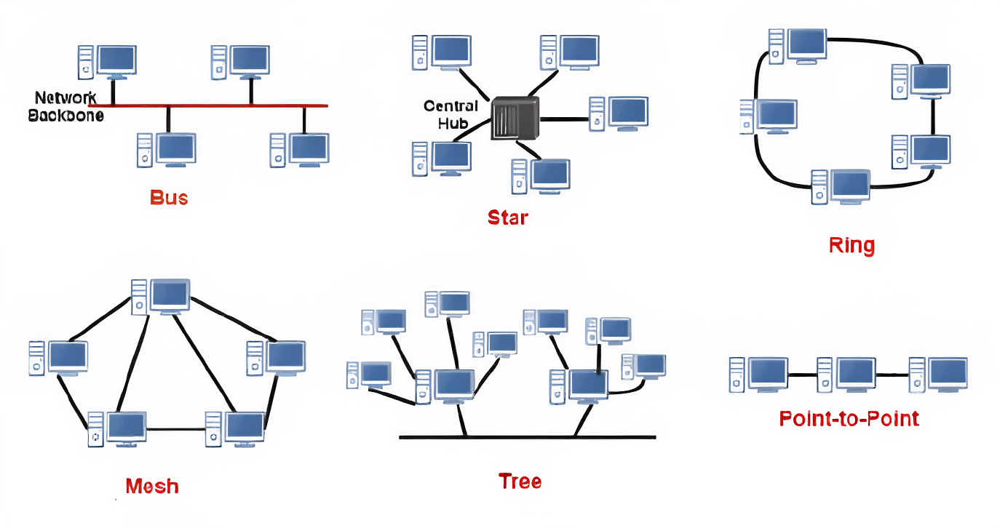
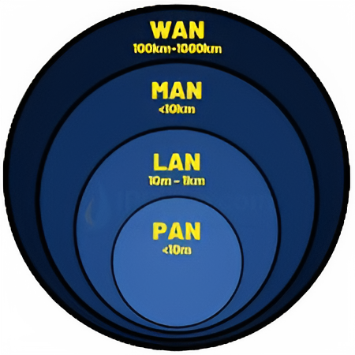
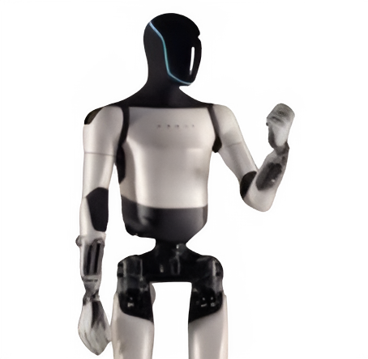
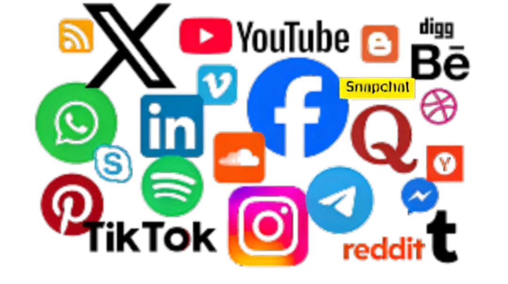
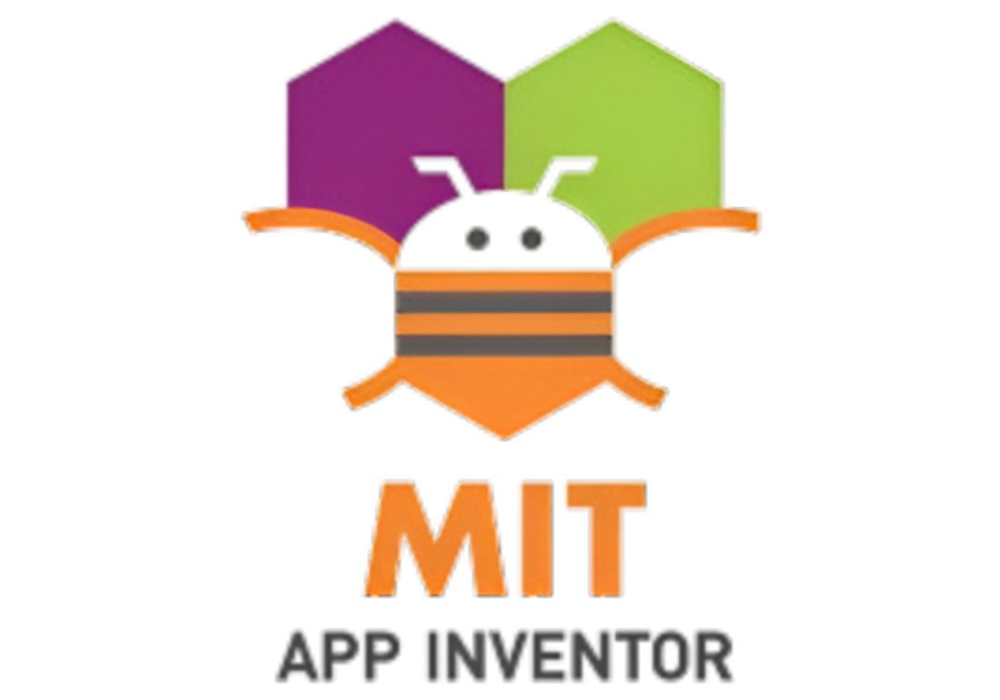
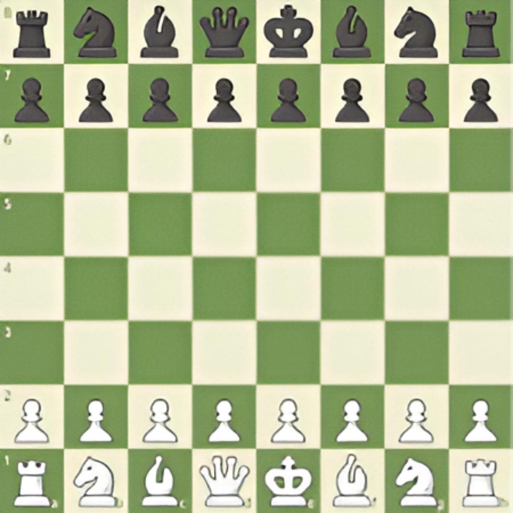

Hello there! If you want to know how this website works then it is very simple. You just need to click on the go to main page button. If you click that button then you will go to the main page and from there you can just select the project you want to know about and find the information about it so, enjoy.
Augmented Reality (AR): Overlays digital content on the real world through devices like smartphones or AR glasses.
Virtual Reality (VR): Creates a completely immersive digital environment using VR headsets.
AR enhances learning by adding interactive 3D models, while VR offers immersive simulations.

Bus: All devices connect to a single central cable, called the backbone. It is inexpensive but is not fault‑tolerant, as a break in the main cable can disrupt the entire network.
Star: Every device connects to a central hub or switch. This is the most common arrangement for Local Area Networks (LANs). A failure in one connection won’t affect others, but the entire network will fail if the central device fails.
Ring: Devices are connected in a circular, closed‑loop fashion, with data passing from one device to the next. A single‑direction ring is vulnerable if one device fails, but a dual‑ring system can provide redundancy.
Mesh: Devices are interconnected with multiple redundant links. A full mesh connects every device to every other one, offering high reliability and security. A partial mesh connects only key devices. Mesh networks are complex and expensive to implement.
Bus topology: Simple but can be prone to failures if the main cable breaks.
Star topology: Highly popular for homes and offices due to easy troubleshooting.
Ring topology: Helps ensure data packets circulate efficiently but risks total failure with one node down.
Mesh topology: Best for critical systems requiring high availability.

PAN (Personal Area Network): A small network for connecting devices around a single person, such as a smartphone, tablet, or Bluetooth headphones. The range is typically limited to a few meters.
LAN (Local Area Network): Connects computers within a limited, local area, like a home, office building, or school.
MAN (Metropolitan Area Network): Spans a larger area than a LAN, such as a city or large campus, by connecting multiple LANs together.
WAN (Wide Area Network): Connects networks over a large geographic area, such as a country or even the entire world. The internet is the most well‑known example of a WAN.
PAN: Typically uses Bluetooth or USB connections for nearby devices.
LAN: Supports high‑speed communication within smaller areas.
MAN: Ideal for linking multiple buildings or city infrastructure.
WAN: Uses routers and public networks to connect globally.
Line following robots use sensors to detect and follow a path marked by a line on the floor, usually black on white. These robots are commonly used in industrial automation, logistics, and education to demonstrate basic robotics principles.
They typically use infrared sensors to detect line contrast. Applications include warehouse robots and automated guided vehicles. Programming involves simple control logic to stay on the path.
Soil sensors measure the moisture, temperature, and nutrient content of soil. This data helps farmers and gardeners optimize irrigation and fertilization, improving crop yields and resource efficiency.
Common sensors include moisture probes, temperature sensors, and pH meters. Data can be sent wirelessly to mobile apps for real‑time monitoring. Smart farming techniques rely heavily on soil sensor data for precision agriculture.

Robots integrated with Artificial Intelligence (AI) can perform complex tasks such as perception, learning, decision making, and natural language processing. AI enhances robots’ autonomy and adaptability across various industries.
AI enables robots to recognize objects and navigate environments. Machine learning algorithms help robots improve over time. Examples include autonomous drones, robotic assistants, and self‑driving cars.
Toll gate systems automate vehicle toll collection using RFID tags, cameras, or sensors to reduce traffic congestion and improve efficiency on highways and bridges.
RFID allows fast and contactless payment. Number plate recognition cameras help enforce toll compliance. Smart tolling reduces queues and environmental impact.

Social media platforms enable users to create, share, and interact with content and other users. They are powerful tools for communication, marketing, and community building.
Popular platforms include Facebook, Twitter, Instagram, and TikTok. Social media can influence public opinion and trends. Users share photos, videos, articles, and live streams.
Text to Decimal Formula:
Convert each character to its ASCII value (decimal).
Example: 'A' → 65, 'B' → 66, etc.
Useful for encoding text in numeric form. Helps understand character encoding.
Decimal to Text Formula:
Convert decimal ASCII values back to characters.
Example: 65 → 'A', 66 → 'B', etc.
Useful for decoding numeric data into readable text. Often used in data transmission and encryption.
Text to Octal Formula:
Convert each character to its ASCII decimal value, then convert the decimal to octal (base‑8).
Example: 'A' (65) → 101 in octal.
Octal is a compact way to represent binary data. Used historically in computing systems.
Octal to Text Formula:
Convert each octal number to decimal, and then look up the corresponding ASCII character.
Example: 101 in octal → 65 in decimal → 'A'.
Used to decode information stored in octal format. The inverse of Text to Octal conversion.
Text to Binary Formula:
Convert each character to its ASCII decimal value, then convert the decimal to binary (base‑2).
Example: 'A' (65) → 01000001 in binary.
Binary is the native language of all computers. Fundamental for data storage and communication.
Binary to Text Formula:
Group the binary digits (usually 8 bits), convert each group to decimal, and then to the ASCII character.
Example: 01000001 → 65 in decimal → 'A'.
Decodes computer‑readable binary into human‑readable text. Essential process in network communication.
Text to Hex Formula:
Convert each character to its ASCII decimal value, then convert the decimal to hexadecimal (base‑16).
Example: 'A' (65) → 41 in hex.
Hexadecimal is often used in web colors and memory addresses. A very compact representation of binary data.
Hex to Text Formula:
Convert each hexadecimal pair (byte) to decimal, and then look up the corresponding ASCII character.
Example: 41 in hex → 65 in decimal → 'A'.
Used for inspecting raw data and network packets. The inverse of Text to Hex conversion.
Decimal to Binary Formula:
Repeatedly divide the decimal number by 2 and record the remainders in reverse order.
Example: 13 in decimal → 1101 in binary.
This is the core conversion for computer math. Demonstrates place value in different number systems.
Binary to Decimal Formula:
Multiply each binary digit by 2^n (where n is the digit’s position starting from 0 on the right) and sum the results.
Example: 1101 = 1×2^3 + 1×2^2 + 0×2^1 + 1×2^0 = 8+4+0+1 = 13.
Used to translate raw computer values into base‑10 numbers. The inverse of Decimal to Binary conversion.
Decimal to Octal Formula:
Repeatedly divide the decimal number by 8 and record the remainders in reverse order.
Example: 10 in decimal → 12 in octal.
Octal is sometimes easier for humans to read than long binary strings. Historically used in file permissions on Unix systems.
Octal to Decimal Formula:
Multiply each octal digit by 8^n (where n is the digit’s position starting from 0 on the right) and sum the results.
Example: 12 = 1×8^1 + 2×8^0 = 8+2 = 10.
Used to convert octal codes into standard numbers. The inverse of Decimal to Octal conversion.
Decimal to Hex Formula:
Repeatedly divide the decimal number by 16 and record the remainders (using A‑F for 10‑15) in reverse order.
Example: 255 in decimal → FF in hex.
Hexadecimal is crucial for memory addressing and debugging. It’s the most common base‑conversion used alongside binary.
Hex to Decimal Formula:
Multiply each hex digit by 16^n (where n is the digit’s position starting from 0 on the right) and sum the results.
Example: FF = 15×16^1 + 15×16^0 = 240+15 = 255.
Used to convert hex codes (like color codes) into decimal. The inverse of Decimal to Hex conversion.
Octal to Binary Formula:
Convert each octal digit into its 3‑bit binary equivalent.
Example: 71 in octal → 111001 in binary.
A simple process since 8 = 2^3. Provides a quick visual way to convert between these two bases.
Binary to Octal Formula:
Group the binary digits into sets of three (starting from the right) and convert each group to its octal equivalent.
Example: 111001 → 111 | 001 → 7 | 1 → 71 in octal.
Used to simplify the representation of long binary numbers. The inverse of Octal to Binary conversion.

MIT App Inventor is a beginner‑friendly, drag‑and‑drop programming tool for creating Android apps. It uses visual blocks for coding, making app development accessible to novices and educators.
No prior coding experience needed. Great for teaching programming concepts visually. Supports app testing on mobile devices in real‑time.

Digital Chess Game
This is an interactive digital version of the classic chess game. It helps users practice and play chess against another person. Chess sharpens your mind, teaches strategy, and improves decision‑making skills.
Includes all standard rules of chess. Suitable for beginners and experienced players. Promotes logical thinking and patience. Features include move validation, check/checkmate detection, and turn‑based play. Can be used to learn opening strategies and endgame tactics.
Student Assistant App
The Student Assistant App is a lightweight virtual helper designed specifically for school students. Unlike traditional AI bots, it provides short, direct answers — perfect for quick learning and less confusion.
Features:
Provides brief, relevant answers. Helps with homework and quick research. Student‑friendly language and interface. Could include reminders, quiz practice, or subject explanations.
Example Use: Ask "What is photosynthesis?" and get a one‑line answer like: "Photosynthesis is the process by which plants make food using sunlight."
In simple terms, augmented reality (AR) is technology that overlays digital information, like images or graphics, onto the real world, using a device's camera to blend the two.
It enhances your view of reality rather than replacing it, allowing you to interact with digital elements in your physical environment.
Virtual reality (VR) is a computer-generated, three-dimensional environment that users can explore and interact with, creating a sense of being present in a simulated world.
It typically uses a VR headset to immerse users, blocking out the real world to display sights and sounds that make the virtual world feel realistic.
Text-to-speech (TTS) is a type of assistive technology that converts written digital text into spoken audio.
It is also known as "read-aloud" technology or speech synthesis.
Powered by artificial intelligence, modern TTS systems produce natural, human-like voices by interpreting the text's linguistic structure and converting it into an audio waveform.
Speech-to-Text (STT), also known as Automatic Speech Recognition (ASR), is a technology that converts spoken words into a written transcript.
Modern STT systems use artificial intelligence, machine learning, and deep learning to achieve high accuracy in real-time transcription.
A car stops for an obstacle because of an automated emergency braking (AEB) system, also called a collision mitigation braking system (CMBS), that uses sensors to detect objects in the vehicle's path.
If a collision is imminent and the driver doesn't respond, the system automatically applies the brakes to prevent or mitigate the impact.


Social media platforms enable users to create, share, and interact with content and other users. They are powerful tools for communication, marketing, and community building.
Popular platforms include Facebook, Twitter, Instagram, and TikTok. Social media can influence public opinion and trends. Users share photos, videos, articles, and live streams.